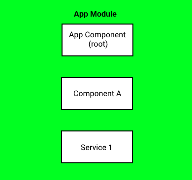
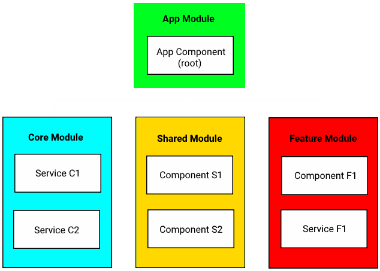

Aliaksei Kuncevič
Software Engeneer/Angular Consultant
v 1.0 (16/05/2018)

State Management with NGXS
v 1.0 (16/05/2018)
What is
State Management ?
State management refers to the management of the state of one or more user interface controls such as text fields, OK buttons, radio buttons, etc. in a graphical user interface. In this user interface programming technique, the state of one UI control depends on the state of other UI controls. For example, a state managed UI control such as a button will be in the enabled state when input fields have valid input values and the button will be in the disabled state when the input fields are empty or have invalid values.
(c) Wikipediastate management
Do I need state management for my angular app?
Subject/
BehaviorSubject
http://reactivex.io/documentation/subject.html
My Simple App
My Complex App
ngxs.io
Features
- Simple
- Dependency Injection (DI)
- Action Life Cycles
- Promises
Action Life Cycles
- ofAction
- ofActionDispatched
- ofActionSuccessful
- ofActionCanceled
- ofActionErrored
Patch State
@Action(LoadItems)
LoadItems(sc: StateContext) {
sc.patchState({ loading: true });
return this.service
.getItems()
.pipe(
tap(data => sc.dispatch(new LoadItemsSuccess(data)))
);
} Concepts
- Store - global state container, action dispatcher and selector
- Actions - class describing the action to take and its associated metadata
- State - class definition of the state
- Selects - state slice selectors
ngxs store
export class AddTodo {
static type = 'AddTodo';
constructor(public readonly payload: string) {}
}
export class RemoveTodo {
static type = 'RemoveTodo';
constructor(public readonly payload: number) {}
}
export class TodoStateModel {
todo: string[];
pizza: { model: any };
}
@State({
name: 'todo',
defaults: []
})
export class TodoState {
@Selector()
static pandas(state: string[]) {
return state.filter(s => s.indexOf('panda') > -1);
}
@Action(AddTodo)
addTodo({ getState, setState }: StateContext, { payload }: AddTodo) {
setState([...getState(), payload]);
}
@Action(RemoveTodo)
removeTodo({ getState, setState }: StateContext, { payload }: RemoveTodo) {
setState(getState().filter((_, i) => i !== payload));
}
} control flow

Plugins
- Devtools-plugin
- Form-plugin
- Logger-plugin
- Storage-plugin
- Websocket-plugin
demo
Links
en.wikipedia.org/wiki/State_management
medium.com/@amcdnl/announcing-ngxs-3-0-ee00969292d
ngxs.io
github.com/ngxs/store
github.com/kuncevic/ngxs-form-example
twitter.com/dee_bloo/status/991146546837311489
gist.github.com/search?utf8=✓&q=state+management+rxjs
reactivex.io/documentation/subject.html
youtube.com/watch?v=rkn73khwfWU

medium.com/@amcdnl/announcing-ngxs-3-0-ee00969292d
ngxs.io
github.com/ngxs/store
github.com/kuncevic/ngxs-form-example
twitter.com/dee_bloo/status/991146546837311489
gist.github.com/search?utf8=✓&q=state+management+rxjs
reactivex.io/documentation/subject.html
youtube.com/watch?v=rkn73khwfWU